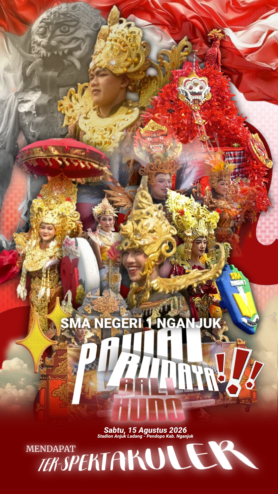

Nama: Dzaky Anarta Pawira
Kelas: XI-5
Sekolah: SMA Negeri 1 Nganjuk

SMA Negeri 1 Nganjuk turut memeriahkan parade budaya dalam rangka peringatan Hari Kemerdekaan Republik Indonesia pada Sabtu, 15 Agustus 2026 di Stadion Anjuk Ladang – Pendopo Kabupaten Nganjuk. Mengusung tema budaya Bali, para siswa menampilkan beragam kostum, riasan, dan properti khas Bali. Penampilan tersebut menunjukkan kreativitas, kekompakan, serta semangat para siswa dalam melestarikan budaya Indonesia. Melalui kegiatan ini, SMA Negeri 1 Nganjuk tidak hanya ikut memeriahkan kemerdekaan, tetapi juga memperkenalkan keberagaman budaya Nusantara dengan cara yang kreatif dan menarik.